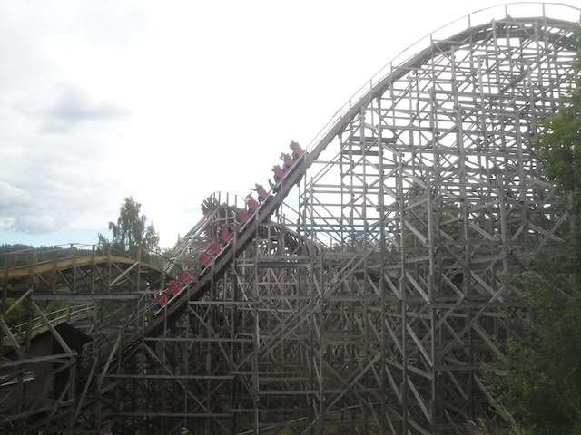
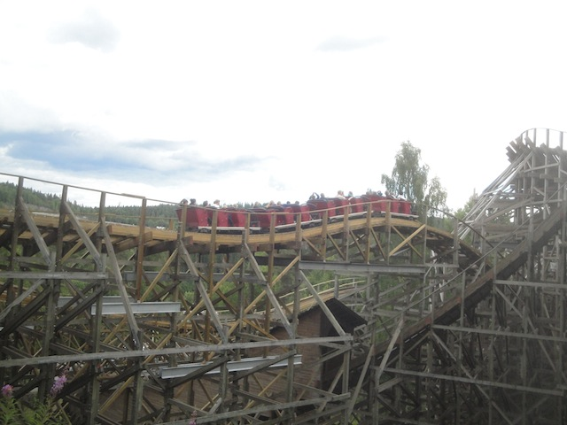
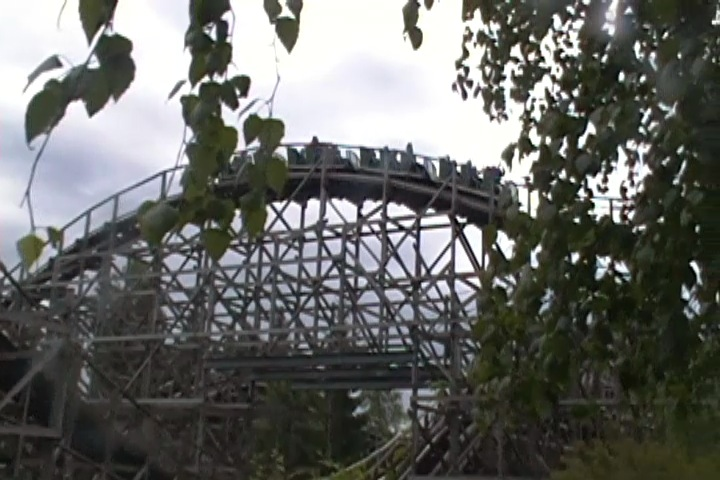
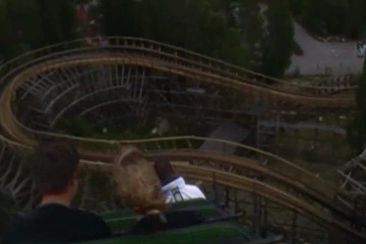
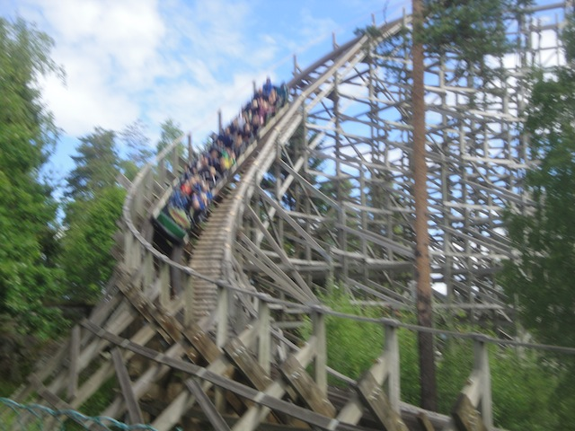
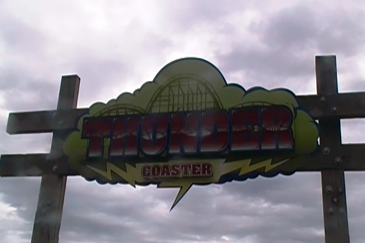

| |
Thunder Coaster Review

Today, we're at Tusenfryd where we'll be reviewing Thunder Coaster, the park's wooden coaster and one of the only wooden coasters ever made by Vekoma. Yes, that's right. Vekoma has made not one, not two, but three. Three different wooden coaster. Now before you judge these rides, this is actually a really fun ride. Yeah. The Vekoma Woody is actually really good. Sure, it may not be the best wooden coaster ever, but I don't think that's what anyone was expecting. OK. Let's just see what this ride is about. We get in the trains, pull down the lap bar, and we're off. We head up the lifthill and get a nice view of the woods of Norway. Oh, and there's some Tusenfryd thrown in there as well. Still, it's very pretty. Eventually, we reach the top and head down the spiral first drop. There aren't a whole lot of laterals here, but it still is a lot of fun. There's a little bit of shuffling, but it's all good. And hey, we've got some good speed. We rise up a decent sized hill, and then WOAH!!! We head down the second drop, which is actually the biggest drop of the ride. Hmm. So we start out with a spiral first drop, rise up, and then the 2nd drop is actually the big drop of the ride. Gee, it kind of sounds like we're riding the wooden coaster version of Phantoms Revenge. Nah, Phantom is much better. But this is still really good. Anyways, at the bottom of the first drop, we get to TAKE THE TUNNEL!!! YEAH!!! You get some laterals in the tunnel as there's a turn at the bottom of the first drop. We then burst out of the tunnel, still going around this turn, which is more of a slight upward helix. Cause we eventually reach the top and head down another small drop. Wee! We head up another small hill that actually gives us some good airtime. We then head around another turn, which is sort of a slight helix. So warning. We have some laterals up ahead. SLAM!!! We then head down another drop. Wee!! Airtime!! We then head up a curved hill that's...interesting. It has some laterals and is fun. But nothing crazy. We then dip down to the ground and rise back up. Wee! Airtime! We then head around another banked turn, heading down a small dip. Wee!!! We head through a nice little bump, doesn't really help us, just pretty much acts as straight track. We then head on up, go right around another banked turn, and come on out. We head through another dip only to drop down a small drop and into another bunny hop. Yay!! More airtime!! We rise on up and into the brake run. So that may have been a Vekoma Woodie, but that was actually really fun. Yeah, it was mildly rough, but it's just some shuffling. Plus, you could clearly tell where they were retracking the ride. So you noticed a transition in smoothness where they retracked it and it shuffled where the old track was. By now, it should all be retracked and all be good. So yeah. I'm recommending you ride the Vekoma Wooden Coaster. It's actually a really fun wooden coaster with some good airtime, some good laterals, and is just an all around fun ride.
7/10
Location: Tusenfryd
Opened: 2001
Built by: Vekoma
Last Ridden: June 21, 2014
Thunder Coaster Photos





Home
|